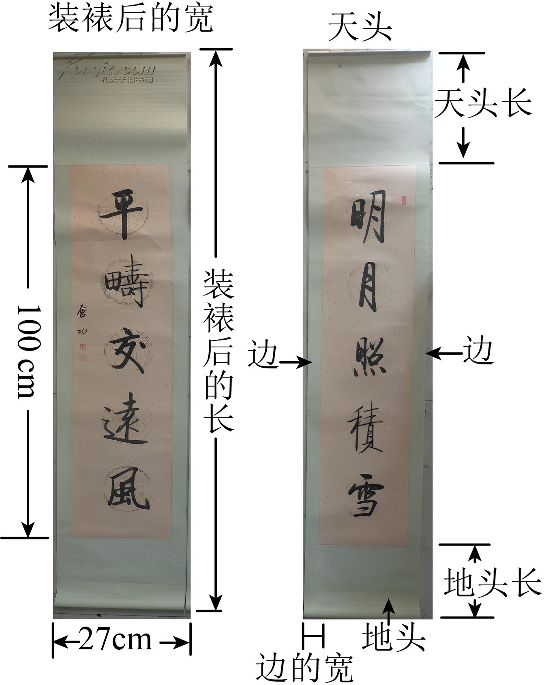
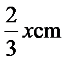
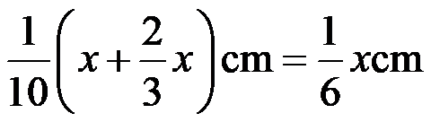
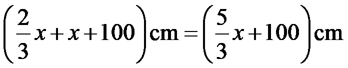
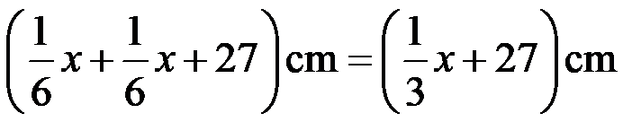
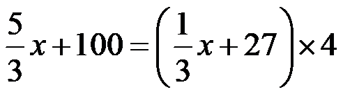
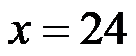
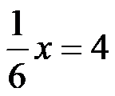

2023年北京中考数学 第21题 解析
21. 对联是中华传统文化的瑰宝，对联装裱后，如图所示，上、下空白处分别称为天头和地头，左、右空白处统称为边．一般情况下，天头长与地头长的比是，左、右边的宽相等，均为天头长与地头长的和的．某人要装裱一幅对联，对联的长为，宽为．若要求装裱后的长是装裱后的宽的4倍，求边的宽和天头长．（书法作品选自《启功法书》）

【答案】边的宽为，天头长为
【解析】
【分析】设天头长为，则地头长为

，边的宽为
，再分别表示础装裱后的长和宽，根据装裱后的长是装裱后的宽的4倍列方程求解即可．【详解】解：设天头长为，
由题意天头长与地头长的比是，可知地头长为，
边的宽为，
装裱后的长为

，装裱后的宽为

，由题意可得：

解得

，∴

，答：边的宽为，天头长为．
【点睛】本题考查了一元一次方程的应用，题中的数量关系较为复杂，需要合理设未知数，找准数量关系．